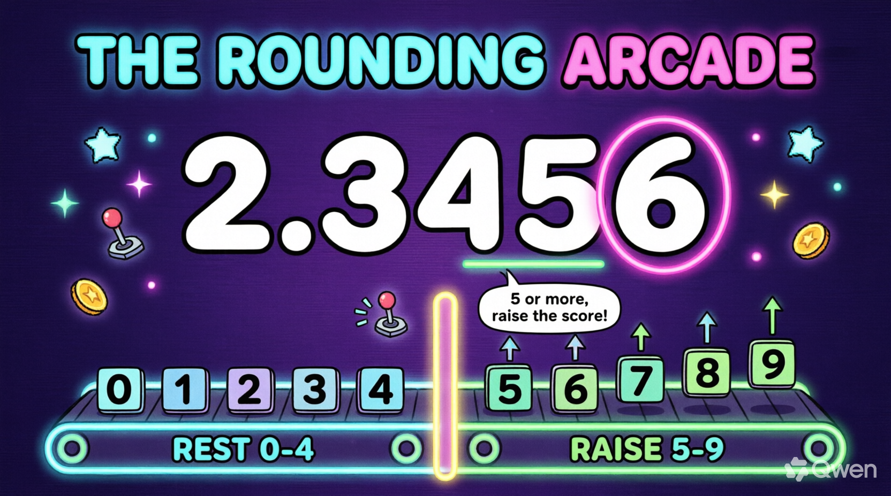

Watch this video and write down the 5 SECRET DIGITS that pop up on screen — then type them to unlock the interactive lesson, answer the questions, and earn ⭐ stars!
10 seconds until the arcade opens…
WELCOME TO THE ROUNDING ARCADE!
Mission: Round It Up! 🕹️
Round decimal numbers to the nearest thousandths — raise or rest!
🪑 KNOW THE SEATS: tenths • hundredths • thousandths + the DECIDER!
⬆️ RAISE THE SCORE when the decider is 5, 6, 7, 8, 9!
🛑 GIVE IT A REST when the decider is 0-4 — then drop the rest!

WARM-UP, PLAYER ONE!
Decimals Have Tiny Seats!
0.1tenths
0.01hundredths
0.001thousandths
Each seat to the right is TEN times smaller — and the thousandths seat is our target!
0.1 = 1 of 100.01 = 1 of 1000.001 = 1 of 1000
To round to the nearest thousandth, we must know exactly who sits where — check the seats!
UNIT 1 🪑
Know the Seats — Meet the Decider!
ONES4
.
TENTHS6
HUNDREDTHS2
THOUSANDTHS8
DECIDER (ten-thousandths)1
4.6281 → underline the 8, circle the 1 — the decider!
underline = target seatcircle = decider next doornever peek elsewhere!
PRACTICE 🪑 Q1/5 • KNOW THE SEATS
In 4.6281, which digit is in the THOUSANDTHS place?
PRACTICE 🪑 Q2/5 • KNOW THE SEATS
In 4.6281, which digit is the DECIDER?
PRACTICE 🪑 Q3/5 • KNOW THE SEATS
In 0.7053, which digit is in the HUNDREDTHS place?
PRACTICE 🪑 Q4/5 • KNOW THE SEATS
In 9.1468, which digit is in the THOUSANDTHS place?
PRACTICE 🪑 Q5/5 • KNOW THE SEATS
In 2.3506, the digit 5 sits in which place?
UNIT 2 🎰
The Golden Rule — Raise or Rest!
decider 0-4 → REST
01234
decider 5-9 → RAISE
56789
"5 or more, raise the score; 4 or less, give it a rest!"
raise = +1 to thousandthsrest = keep itthen DROP the right-side digits!
PRACTICE 🎰 Q1/5 • THE DECIDER CALL
Rounding 3.4276 — decider is 6. What do we do?
PRACTICE 🎰 Q2/5 • THE DECIDER CALL
Rounding 0.1834 — decider is 4. What do we do?
PRACTICE 🎰 Q3/5 • THE DECIDER CALL
Rounding 7.2595 — decider is 5. What do we do?
PRACTICE 🎰 Q4/5 • THE DECIDER CALL
Rounding 5.6042 — decider is 2. What do we do?
PRACTICE 🎰 Q5/5 • THE DECIDER CALL
Rounding 1.9788 — decider is 8. What do we do?
UNIT 3 ⬆️
Raise It! — 5 or More!
2.34566
decider 6 → RAISE → 2.346! (watch it replay!)
2.3456➜ decider 6 ≥ 5 ➜2.346 ✔
The thousandths flips up by one — and every digit to the right leaves the game!
PRACTICE ⬆️ Q1/5 • RAISE IT (5-9)
2.3456 → ? (nearest thousandth)
PRACTICE ⬆️ Q2/5 • RAISE IT (5-9)
0.5678 → ?
PRACTICE ⬆️ Q3/5 • RAISE IT (5-9)
8.1295 → ? (watch the 9!)
PRACTICE ⬆️ Q4/5 • RAISE IT (5-9)
4.7859 → ?
PRACTICE ⬆️ Q5/5 • RAISE IT (5-9)
6.0455 → ?
UNIT 4 🛑
Let It Rest! — 4 or Less!
0.8674
decider 4 → REST → 0.867! (watch it replay!)
0.8674➜ decider 4 ≤ 4 ➜0.867 ✔
The thousandths stays put — just drop the digits to the right and move on!
PRACTICE 🛑 Q1/5 • LET IT REST (0-4)
0.8674 → ?
PRACTICE 🛑 Q2/5 • LET IT REST (0-4)
3.1412 → ?
PRACTICE 🛑 Q3/5 • LET IT REST (0-4)
7.5283 → ?
PRACTICE 🛑 Q4/5 • LET IT REST (0-4)
1.2061 → ?
PRACTICE 🛑 Q5/5 • LET IT REST (0-4)
9.9844 → ?
UNIT 5 📏
The Number Line — Which Side Wins?
0.42400.42450.4250▼ 0.4246nearer 0.4250 →
past the middle → raise • before the middle → rest
0.4246 is past 0.4245so it rounds to 0.425line & rhyme always agree!
PRACTICE 📏 Q1/5 • NEAREST THOUSANDTH
0.4246 sits between which two thousandths?
PRACTICE 📏 Q2/5 • NEAREST THOUSANDTH
0.4246 → ?
PRACTICE 📏 Q3/5 • NEAREST THOUSANDTH
0.9999 → ? (chain reaction!)
PRACTICE 📏 Q4/5 • NEAREST THOUSANDTH
5.4321 → ?
PRACTICE 📏 Q5/5 • NEAREST THOUSANDTH
2.7183 → ?
ARCADE HAZARDS! ⚠️
Don't Lose a Life! 👾
Hazard 1 • Wrong Seat
The decider is the digit RIGHT AFTER the thousandths — the ten-thousandths. Never peek at any other digit!
Hazard 2 • Forgetting to Drop
After rounding, the right-side digits leave the game: 2.3456 → 2.346, NOT 2.3466!
Hazard 3 • Chain Reaction
When a 9 raises, it becomes 10 — carry left! 8.1295 → 8.130 and 0.9999 → 1.000!
FINAL QUIZ 🧠 Q1/10
In 6.8352, which digit is in the THOUSANDTHS place?
FINAL QUIZ 🧠 Q2/10
0.2468 → ?
FINAL QUIZ 🧠 Q3/10
4.1734 → ?
FINAL QUIZ 🧠 Q4/10
Rounding 9.6587 — which digit is the DECIDER?
FINAL QUIZ 🧠 Q5/10
3.0997 → ? (chain reaction!)
FINAL QUIZ 🧠 Q6/10
The decider is exactly 5. What do we do?
FINAL QUIZ 🧠 Q7/10
12.4055 → ?
FINAL QUIZ 🧠 Q8/10
0.0642 → ?
FINAL QUIZ 🧠 Q9/10
Which decimal rounds to 0.750?
FINAL QUIZ 🧠 Q10/10
8.9995 → ? (boss level!)
ARCADE COMPLETE 🔔
1 • underline thousandths2 • circle the decider3 • 5+ raise / 4− rest4 • drop the rest
2.3456 → 2.3460.8674 → 0.8670.9999 → 1.000
🕹️ ROUNDING ARCADE CHAMPION!
Keep rounding — see you at the next level!
→ Next ← Back F Fullscreen 🖱️ click answers (Lesson)
01 / 44
🕹️ THE ROUNDING ARCADE
Math 5 • Term 2 • Week 2 — Round decimal numbers to the nearest thousandths: know the seats, read the decider, raise or rest!
Enter the 5-digit passcode you collected from the Preview video 👀